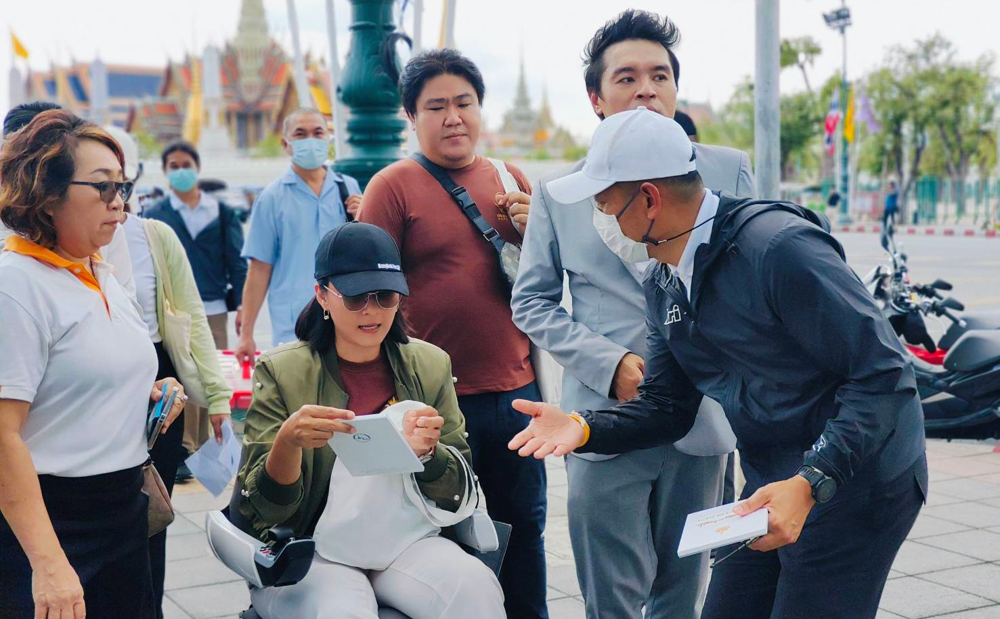

"ความพิการอาจเป็นเพียงส่วนหนึ่งที่มองเห็นได้จากภายนอก แต่ลึกลงไป เรามีความสามารถ มีศักยภาพ และมีคุณค่าที่ไม่ต่างจากใคร สิ่งที่พวกเราต้องการไม่ใช่ความเวทนาสงสาร หากแต่เป็นความเข้าใจ และโอกาสที่จะได้พิสูจน์ตัวเอง ได้เข้าถึงสิทธิขั้นพื้นฐาน และสวัสดิการที่จำเป็น เพื่อให้สามารถดำรงชีวิตได้อย่างอิสระ และมีส่วนร่วมในการพัฒนาสังคมได้อย่างเต็มภาคภูมิ ความเท่าเทียมจึงไม่ใช่แค่คำพูดสวยหรู แต่คือการลงมือทำจริง"
" Lady Wheeler "
พื้นที่ที่สะท้อนความเข้าใจ ให้รับรู้ ความต่างที่เท่าเทียม
ภารกิจของเรา
- สร้างสรรค์สื่อ: เพื่อเปิดมุมมองใหม่เกี่ยวกับคนพิการและความหลากหลายในสังคม เช่น รายการ “OH I SEE อ๋อ...มันเป็นอย่างนี้นี่เอง”
- ส่งเสริมการเข้าถึงสิทธิ: เราทำงานเพื่อให้คนพิการและกลุ่มเปราะบางได้รับรู้และเข้าถึงสิทธิที่จำเป็น ทั้งด้านการรักษาพยาบาล การจ้างงาน และการคุ้มครองทางกฎหมาย
- ประสานความร่วมมือ: เราเชื่อมโยงภาครัฐ เอกชน และชุมชน เพื่อร่วมกันสร้างสังคมแห่งความเข้าใจที่ทุกคนอยู่ร่วมกันได้อย่างมีศักดิ์ศรี
- เล่าเรื่องราวสร้างแรงบันดาลใจ: เราถ่ายทอดเรื่องราวของผู้คนเพื่อจุดประกายความหวัง และสะท้อนคุณค่าของทุกชีวิต ไม่เว้นแม้แต่ชีวิตเล็กๆ ของแมวจร

“เราไม่ได้แค่มาเล่าเรื่อง…แต่มาบอกเล่าเรื่องราวเพื่อให้ทุกคนได้รับรู้ เห็นในคุณค่าชีวิตที่เท่าเทียม และเข้าอกเข้าใจกันและกัน”
ช่องทางสื่อสารของเรา

@Lady Wheeler

@Lady Wheeler Channel
OH I SEE อ๋อ...มันเป็นอย่างนี้นี่เอง
พลังของเสียงเล็ก ๆ
เราเชื่อว่าพลังของการเปลี่ยนแปลง ไม่ได้วัดกันที่ความดังของเสียง... หากแต่วัดกันที่ความกล้าหาญที่จะเปล่งเสียงนั้นออกมา
เสียงของเราอาจเป็นเพียงเสียงเล็กๆ แต่เราปรารถนาให้มันเป็นดั่งสะพานที่แข็งแกร่ง พอที่จะให้ใครสักคนใช้ก้าวข้ามหุบเหวแห่งความกลัว, ทลายกำแพงของความไม่เข้าใจ และเยียวยาบาดแผลจากความเจ็บปวด
นั่นคือเหตุผลที่เราจะ “พูดต่อไป”
— ด้วยความสุภาพ ให้เกียรติซึ่งกันและกัน ด้วยความตั้งใจ และด้วยจุดยืนที่มั่นคง
สื่อล่าสุด
เสียงจากพวกเรา
ร่วมเดินทางกับ Lady Wheeler
ไม่ว่าคุณจะเป็นใคร จะเป็นคนพิการหรือไม่พิการ เป็นนักเปลี่ยนแปลง หรือเพียงคนธรรมดาที่มีใจเห็นคุณค่าความเป็นคน ความเป็นชีวิตที่เท่าเทียม...
นี่คือพื้นที่สำหรับความคิด กิจกรรม และภารกิจของผู้คนที่เห็นคุณค่าของความเข้าใจ มาร่วมกันขับเคลื่อนความแตกต่างหลากหลายสู่สังคมแห่งความเข้าใจที่อยู่เย็นเป็นสุขร่วมกัน